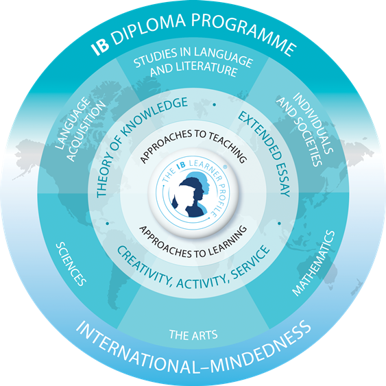

The IB Academy
The Ib Academy Programme
Beyond academic rigor, the International Baccalaureate (IB) Diploma Programme helps students develop essential skills that will benefit them for the rest of their lives.
Established in 1968 by the International Baccalaureate Organization (IBO) in Geneva, Switzerland, the IB Diploma aims to deliver academic excellence in schools around the world. It is a comprehensive two-year pre-university programme that challenges students to exceed their potential.
Some benefits of the IB Diploma:
1. Can positively impact university admission
A study conducted shows that not only were IB Diploma graduates more likely to enroll in university, but were also more likely to enroll in selective universities, stay enrolled and perform better during university study.
2. Develops a sense of global affiliation
Nearly 150 countries around the world offer the IB, and colleges and universities from almost 90 countries accept the IB Diploma exam results annually. IB graduates are 21.4 percent more likely to be admitted into 10 of the most prestigious universities in the US, including Harvard, Princeton, Yale and Stanford.
3. Advanced research skills
The Extended Essay and Theory of Knowledge components of the IB Diploma require the development of advanced independent research and organizational skills, which are crucial for students who want to, pursue higher learning and excel in their careers. Moreover, students’ performance in their Extended Essays correlated with their grades in undergraduate studies.
4. Instills critical thinking and time management skills
According to the aforementioned study by the Chicago Postsecondary Transition Project, IB Diploma students have stronger academic skills than their non-IB Diploma counterparts, especially in analytical writing. Additionally, these same students learned to develop good study habits by setting aside time for assignments and revision and avoiding distractions.
5. Develops the whole person
Creativity, Action and Service (CAS) is a cornerstone component of the IB Diploma that elevates personal and interpersonal growth through direct experience, such as creating resource materials for a community or participating in international outreach projects.

